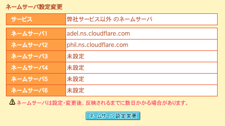
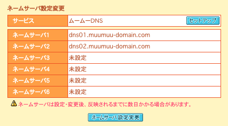
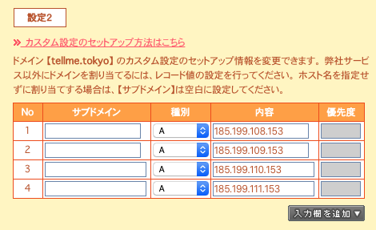
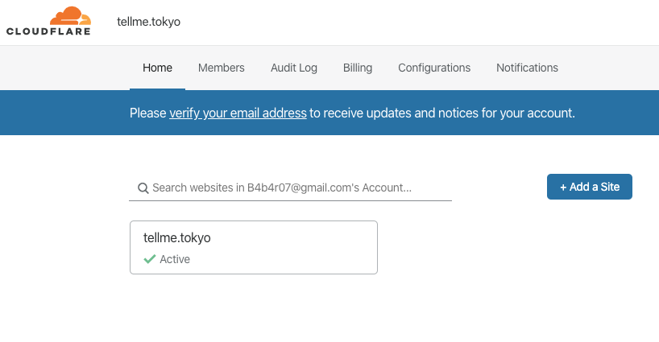
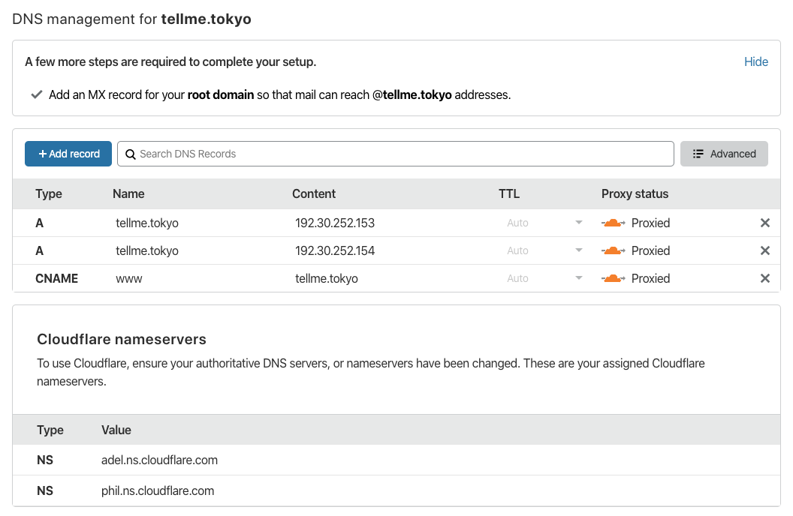
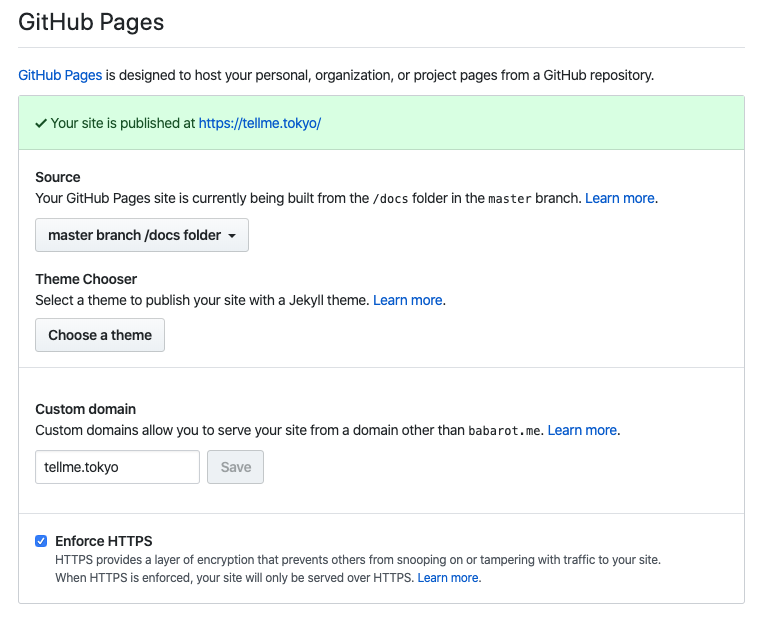

以前は GitHub Pages だけでは HTTPS 配信ができなかったので、Cloudflare をプロキシにして HTTPS 化させていた。
カスタムドメインの GitHub Pages で HTTPS を使う - Qiita
もう必要ないので Cloudflare を通さないようにする。
Before:
Domain-provider DNS -> Cloudflare DNS -> GitHub -> tellme.tokyo
After:
Domain-provider DNS -> GitHub -> tellme.tokyo
1. ドメインプロバイダの DNS 設定を Cloudflare からプロバイダ提供のものに変更する
Cloudflare DNS を使っていたのを、

ムームードメインの DNS サーバを使うようにセットアップした。

2. GitHub Pages への IP アドレスを A レコードに設定する
GitHub Pages に向ける。

参考: GitHub Pages で HTTPS を有効にする | tellme.tokyo
$ dig tellme.tokyo +noall +answer
Cloudflare ではなく GitHub が参照される。
3. Cloudflare を通らなくなるので設定を消す
ここらへんの設定を消す。
サイトごとに設定を持っている。

Cloudflare のコンパネから DNS のタブを選択すると、今までここを通過するような設定になっていることがわかる。

x して消して良い。
4. GitHub Pages の設定画面から Enforce HTTPS をする
DNS の切り替えに時間を要して接続が確立するまで Warning が出るけど放っておくと解消される。
すると Enforce HTTPS を押せるようになるので押したら完了。

参考